- Larger and more prominent navigation bar with responsive buttons
- Title text given dark outline/shadow to define it against the background
- Consistent cont choices cooresponding to the text's purpose and heading level
Analyzing Usability of the Original Page
Selected Webpage:
I redesigned the webpage for a non-profit organization called The Grand Adventure, which provides programming for pediatric and adult cancer survivors. I chose this website because I am interested in the intersection between design and the healthcare industry, and since this organization is a small non-profit, I was interested in seeing how I might be able to revise the existing interface.
Note: the webpage was recently redesigned, but the original version that I redesigned can be found here.
 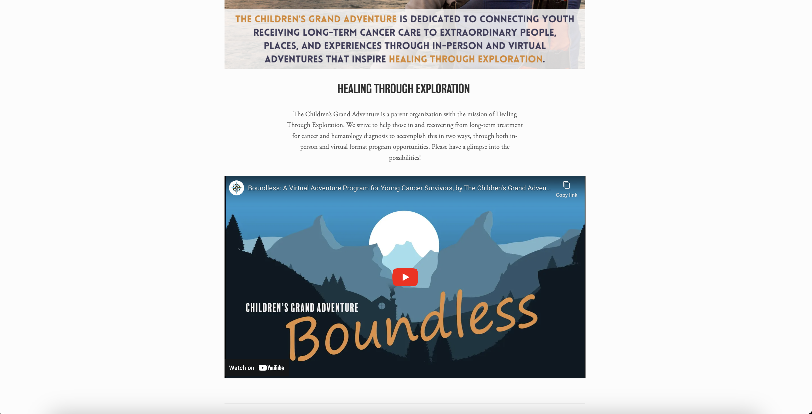
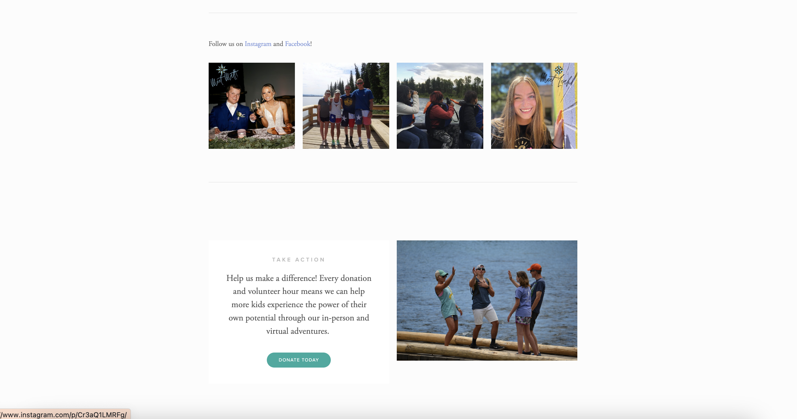
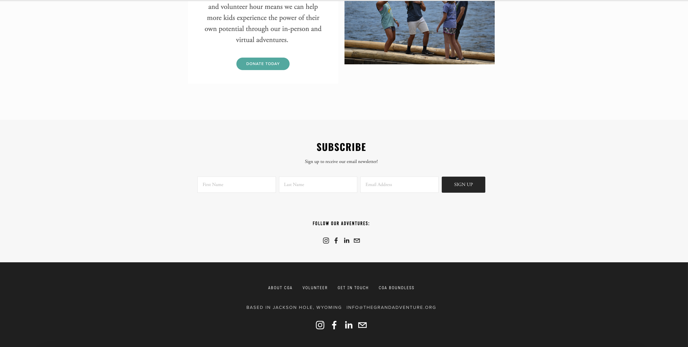
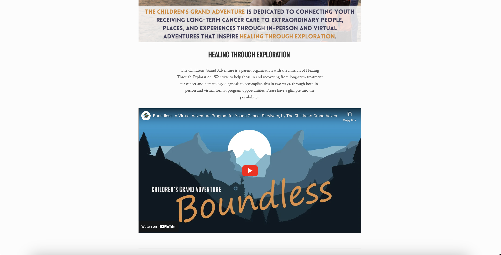
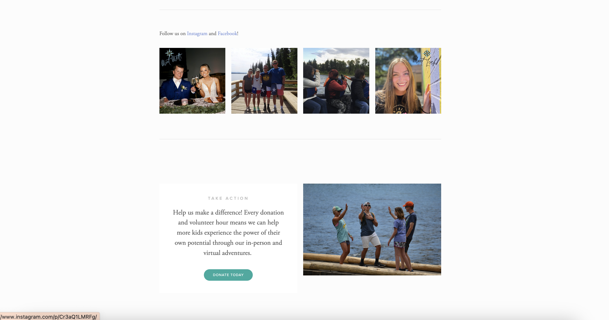
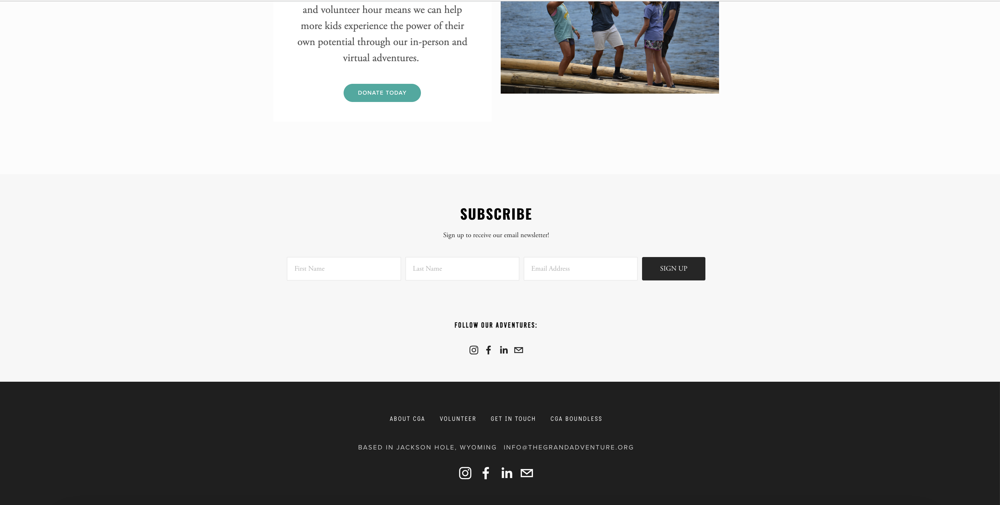
Analyzing Usability Problems:
The webpage is not overly complex, but there are obstructions to efficiently navigating the page. The purpose of this website is to provide information to a user about the goals and purpose of this organization and its programs, but it is difficult to figure out exactly what this organization does from the homepage based on the existing conceptual model, which is very unstructured and does not strongly communicate to a user how it works.
Learnability
- Text describing the goal of the organization is on the page, but there is not a clear flow, hierarchy, or subdivisions when scrolling down the page, making it challenging for first time users to navigate.
- When trying to learn about the organization and use this site, a user likely has to scroll all the way down the page and go to other pages in order to piece together the information they are looking for.
- Text should be clearer, more descriptive, and more directly related to its designated section of the page
- Links could be more communicative to the user if visually responsive using color change on hover
Efficiency
- The images distract from the information on the page and don’t directly relate to the surrounding text.
- Much of the informative text is too small; not given enough emphasis through typography; uses inconsistent fonts throughout. This (along with the lack of subdivisions) makes page navigation inefficient.
- The majority of the webpage is not very reflective of the organization itself or its identity (e.g. through color, typography, branding)
Memorability
- Beyond the images from the organization program itself, there is nothing distinguishable or memorable about the site that relates to the organization
- Lacks cohesion (for instance, there is no consistent use of color or font)
Accessibility:
Using WebAIM WAVE, various contrast errors were indicated in regards to the text and background colors. Additionally, there are errors regarding certain HTML classifications and alternative text labeling. I agree that the low contrast of the text does result in some areas being more difficult to read and that revised alt-text labeling would help boost this webpage’s usability.
Initial Brainstorming
Speed Sketches
(One minute per sketch)
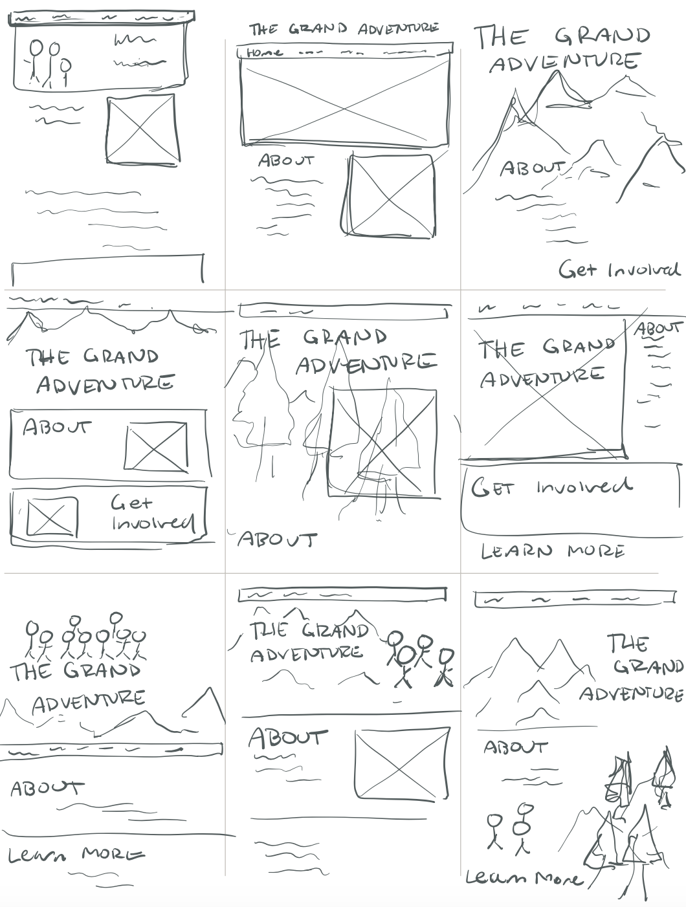Initial Draft
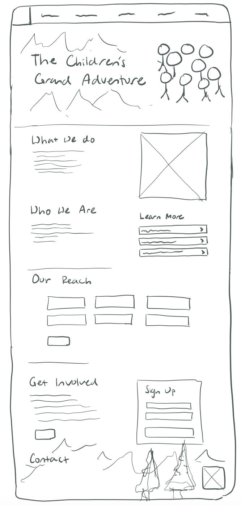Low-Fidelity Wireframes
Desktop Version
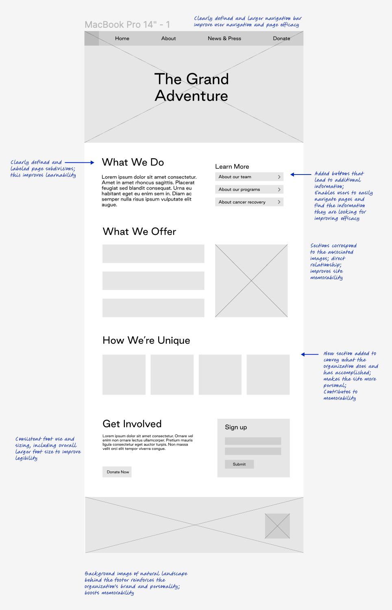Tablet Version
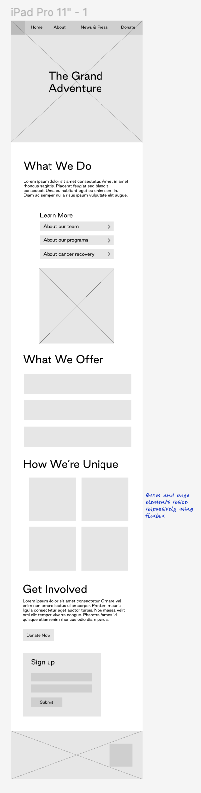Mobile Version

High-Fidelity Mockups
Style Guide
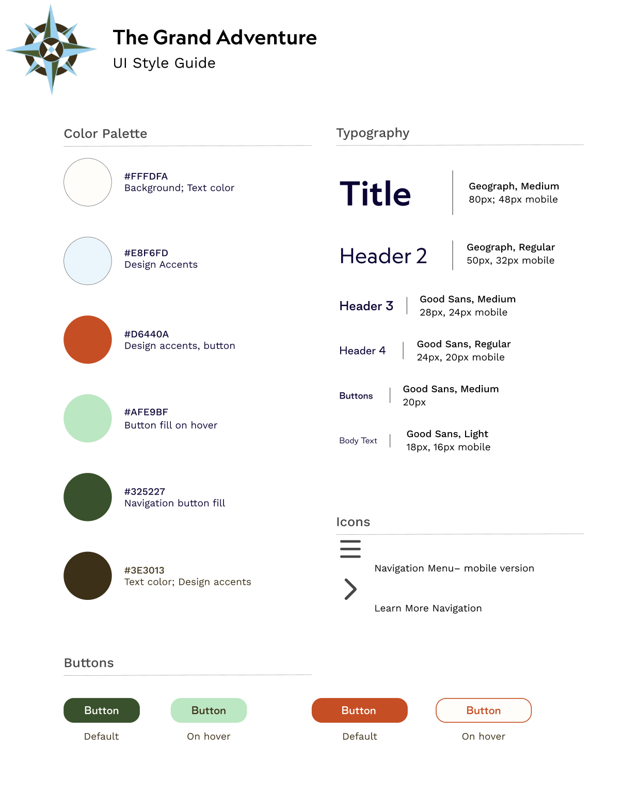Design focuses:
- Create clearly defined and legible sections of the page
- Follow a consistent pattern and structure
- Make buttons responsive to users through color change on hover
- Clearly portray the organization’s purpose and goals as well as their personality through color, images, and text
- Make the page responsive for different screen sizes and devices
Design Decisions
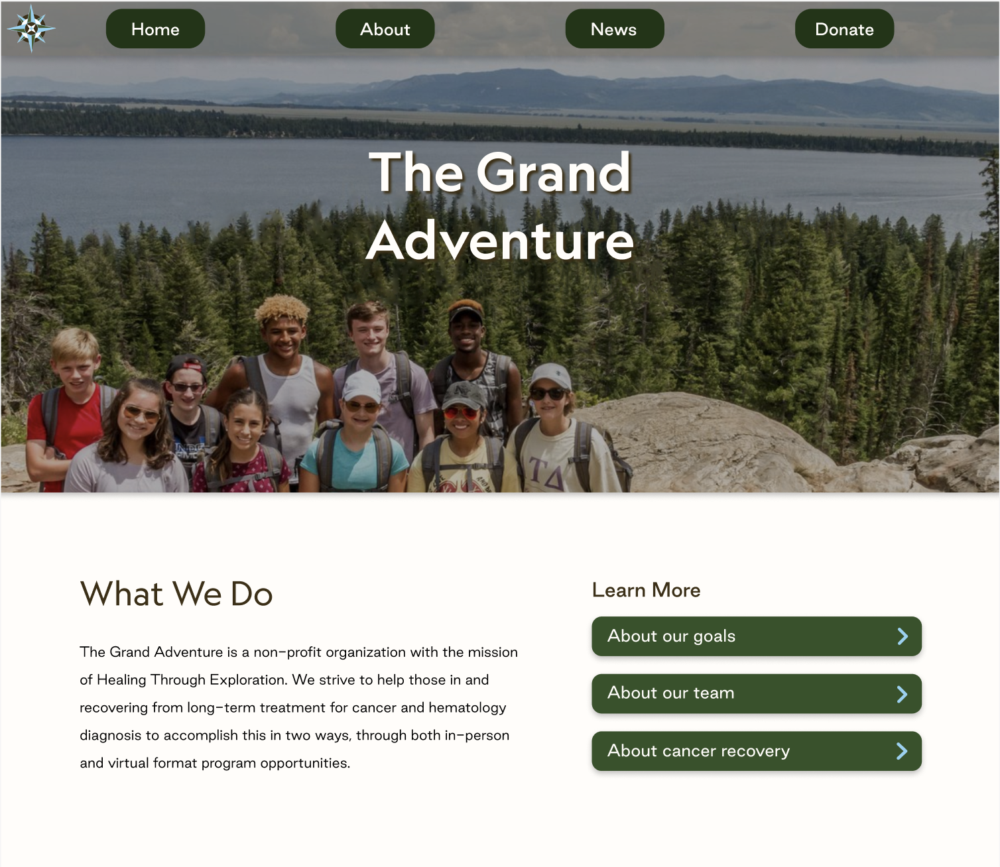
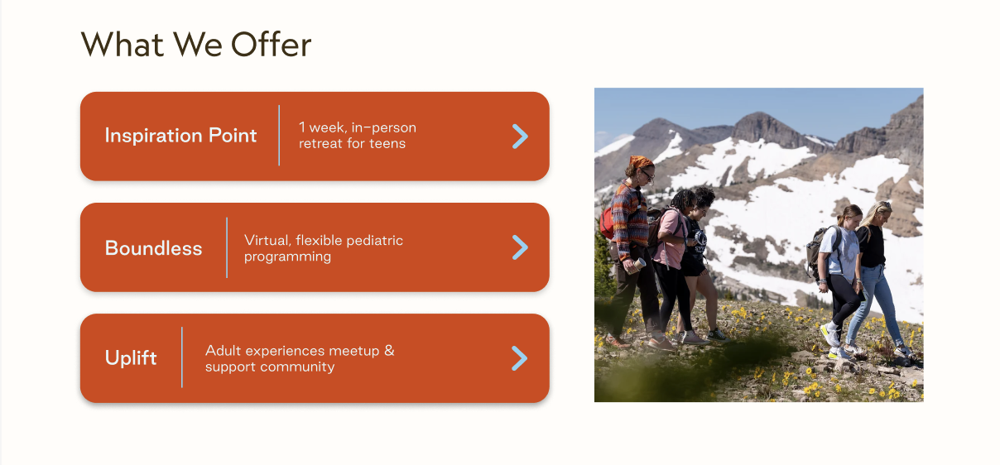
- Clearly defined page subdivisions with headers describing their content and function
- The organization's programs are clearly emphasized, each given a defined section and description
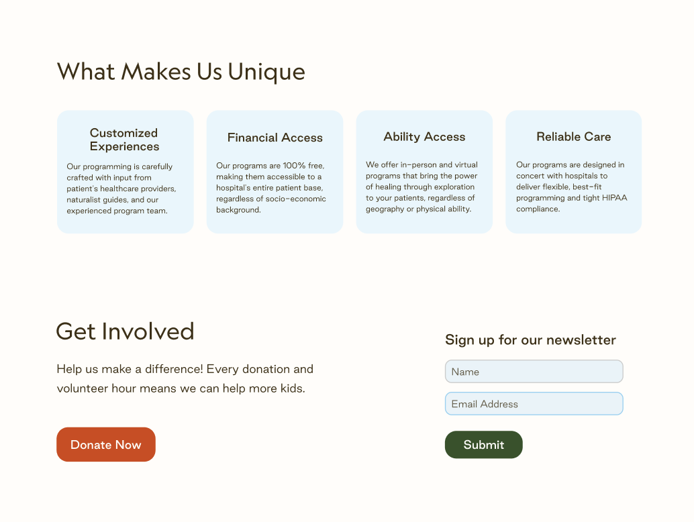
- New section added to feature the organization’s goals, features, and values
- Distinct area to donate to the organization and sign up
Responsive Variations:
Below are the prototype mockups that I created for each screen size using Figma.
Desktop Version

Tablet Version
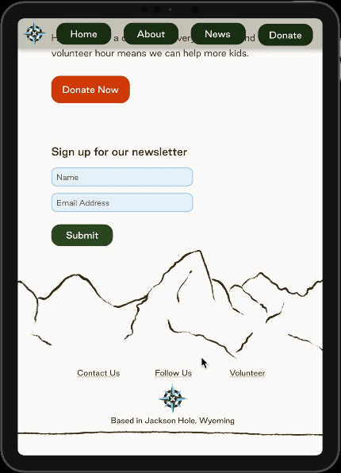Mobile Version

Implementation
Using HTML and CSS, I implemented the high-fidelity prototypes.
The deployed webpage can be viewed here.
The implemented page was tested at various screen sizes for responsiveness. Additionally, I tested the page’s accessibility using WebAIM WAVE. The page passed all of the accessibility checks besides one contrast error regarding the title contrast against the background image. However, I added additional features to aid in the contrast such as adding a dark shadow behind the title text and darkening the background image. I also ensured that the contrast of this area was sufficient by testing it with black and white filters as well as color blind filters.
Key Takeaways
This redesign process highlights the importance of addressing usability issues in design while prioritizing accessibility and visual coherence. Restructuring the information architecture of the original page provided a clearer flow and hierarchy, and descriptive and well-organized text, paired with visually responsive buttons, contributes to a more efficient user experience. I also made an effort to enhance memorability by creating a cohesive visual identity that not only reflects the organization's identity but also contributes to a more immersive experience for users. Accessibility was emphasized with the implementation of high-contrast text and appropriate labeling for screen readers, ensuring that the webpage is accessible to a broad audience. The implementation phase then brought the mockups to life to create a responsive webpage that adapts seamlessly to different screen sizes and devices.
My goal was to not only create an aesthetically pleasing interface but to significantly enhance the user experience, making information easily accessible to a diverse audience and ensuring that individuals can easily engage with the organization's mission and programs. The process of redesigning the webpage was a valuable exploration into the intersection of design, healthcare, and accessibility.